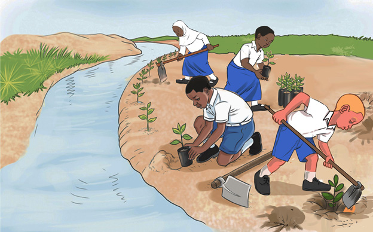

Figure 5: Tree planting along the river bank
We can also conserve water sources by preventing the dumping of waste into them. Furthermore, in accordance with the existing laws, it is important to ensure that, the sewage from homes, industries or mines does not flow into water sources. Likewise, it is essential to prevent activities such as cloth washing and livestock watering from being done in water sources to avoid water pollution. Other human practices such as urinating or defecating and bathing near or in water sources also pollute water sources.
In order to conserve water sources, we should use water carefully. We are also supposed to increase water sources by harvesting rainwater. Additionally, we are supposed to educate people about the importance of conserving water sources and about proper water use. Everyone has a responsibility to conserve water sources in their